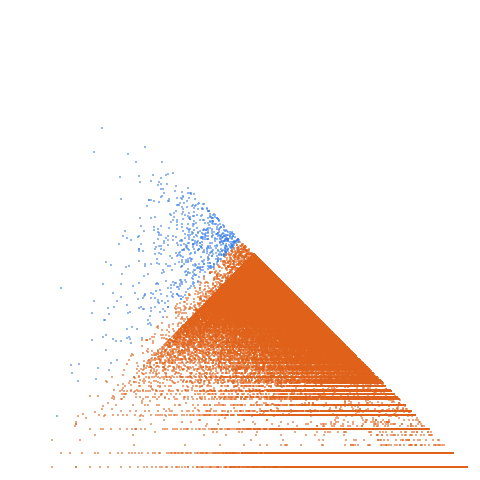

Perfect powers: m^k where m > 0 and k >= 2

Open in the 3-D viewerA001597 on the OEIS
| Terms | 100,000 (n = 1 … 100,000) |
|---|---|
| Decomposable (a > 2d) | 99,996 |
| Level class, k > L | 99,250 · 99.25 % |
| Weight class, k ≤ L | 746 · 0.75 % |
| Ties, k = L | 0 |
| On the level line L = 1 | 9,879 |
| Forced level, l ≤ d² | 97,797 |
| Range of a(n) | 1 … 9,565,035,601 |
| Range of the jump d | 1 … 195,603 |
| Largest weight k, level L | 9,562,688,519, 28,812,787 |
1 and m^e with e >= 2. About sqrt(x) of them lie below x, so the sequence thins out like the squares, and 97.8 % of terms are forced level. The level share is 99.25 %; 97.8 % of terms are forced level (l <= d^2); there are no ties.
The decomposition
Every term of a strictly increasing sequence is written a(n) = k(n)·L(n) + d(n): the jump d = a(n+1) − a(n), the weight k the least divisor of a − d greater than d, the level L = (a − d)/k. A term decomposes when a > 2d; it is in the level class when k > L and in the weight class when k ≤ L. See decompwlj.com and arXiv:0711.0865.